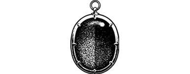

131
After a few minutes the minions cease firing and the pit shaft echoes to the sound of their distant, gurgling laughter. Cautiously you move to the middle of the chamber, to where a line of empty ore wagons stand on a sleepered track. This track curves in the centre and exits the chamber through brick-lined tunnels in the north and east walls. Beside the north tunnel exit you see an iron door with a broken lock.
You unbutton the neck of your tunic and look at the Andarin Bloodstone in the hope it may help you choose the best route to follow. Its amber and crimson halves are glowing a little brighter now, but when you point the gemstone at each tunnel exit in turn, there is no variation. Looking down, you see that there are many tracks in the dusty ground. Some have been made by booted Drodarin feet, but mostly they are the clawed footprints of Shom’zaa’s minions. Then you apply your Kai Sixth Sense and you detect danger lurking along both tunnels.
{kind=link}

If you choose to explore the north tunnel, turn to 67.
If you decide to explore the east tunnel, turn to 265.
If you wish to examine the iron door before leaving this chamber, turn to 139.